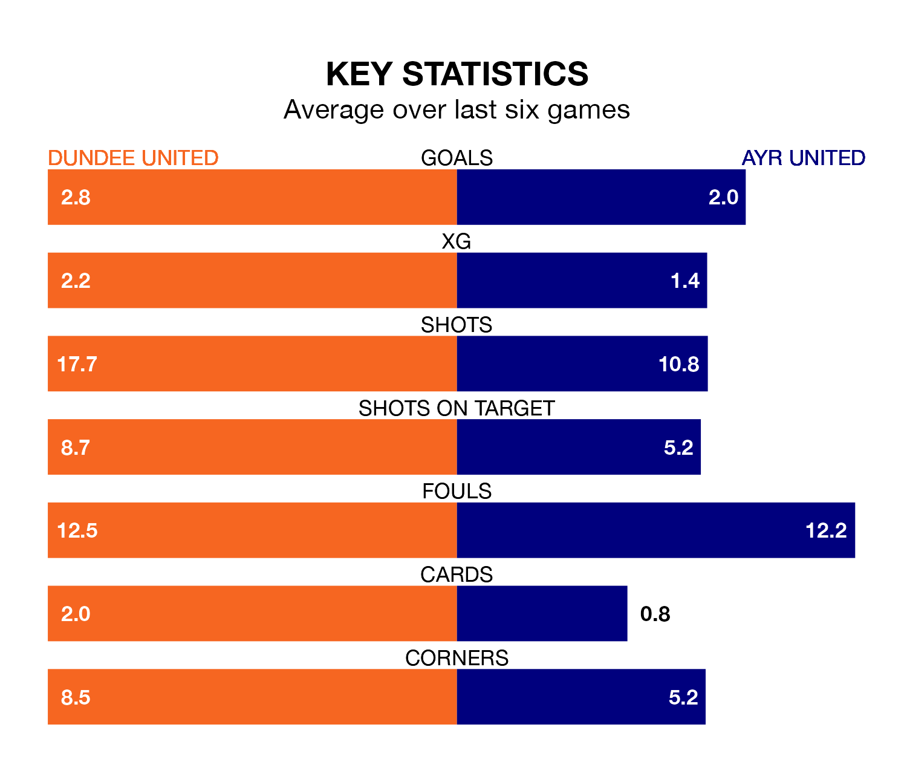

Saturday's match between Dundee United and Ayr United promises to be one for the neutrals, as two of the Championship's most free-scoring sides go head-to-head.
Ahead of the game at Tannadice Park, the Terrors and the Honest Men sit top and fourth in the goal-scoring charts, with 68 and 50 goals respectively.
Striker Louis Moult leads the way for the home side, having bagged 17 goals in their 33 games to date.
And Jamie Murphy has been the main man in the opponents' penalty box for Ayr, with six goals.
Dundee are top of the table after 33 games, of which they have won 20 and drawn eight, earning 68 points.
Ayr are five places behind Dundee United in sixth, with 12 wins and six draws putting them on 42 points.
With Jack Walton between the sticks, the Terrors can rely on one of the league's safest pair of hands. He has kept 17 clean sheets in his 33 appearances this season, and no 'keeper has prevented the opposition scoring more often in the Championship.
In Ayr United's net, Charlie Albinson has four clean sheets in 18 games. He has conceded a goal every 59 minutes, more than twice as often as the 141 minutes between goals for Walton.
In the last 10 years, Dundee and Ayr have played each other on 15 occasions. Dundee won eight of them, Ayr four, and they drew three times.
On average, the Terrors scored 1.3 goals and the Honest Men 0.9 in those matches.
Their last meeting was on February 3, when Dundee won 2-1 away.
The hosts are in good form in the Championship, with four wins and a draw from their last six games.
With three wins and a draw over that period, the Honest Men's form is worse – they have taken 10 points from 18, compared to Dundee's 13.
Dundee's last match was on April 12, a 4-1 win against Greenock Morton, with Glenn Middleton, Moult, Ross Docherty and Tony Watt getting the goals for the Terrors.
Ayr beat Arbroath 5-0 last time out, on April 13, with Anton Dowds, Ben Dempsey, Frankie Musonda, Kurt Willoughby and Logan Chalmers on the scoresheet.
Updated: 11:31 (UTC), 15/04/24